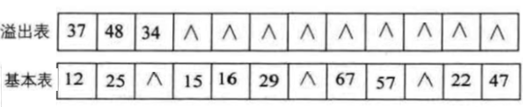

散列表 链接到标题
散列表的定义 链接到标题
顺序表和树表的查找中，记录在存储结构中的位置与关键字无直接关系，查找是通过比较进行的，如果结点特别多，需要和很多无效关键字进行比较，导致效率低下。 如果在元素的存储位置与关键字建立对应关系，进行查找时就无需进行比较，或者少数的比较，这就是散列查找法的思想，它通过对元素的关键字值进行某种运算，直接求出元素的存储位置，因此散列查找法又称为杂凑法或者散列法。
- 散列函数和散列地址: 在记录的存储位置 p 和其关键字 key 之间建立一个确定的对应关系 H，使 p=H(key)，称这个对应关系 H 为散列函数(又称为哈希函数)，p 为散列地址。
- 散列表或哈希表: 一个有限连续的地址空间，用以存储按散列函数计算得到相应散列地址的数据记录，通常散列表的存储空间是一个一维数组，散列地址是数组的下标。
- 冲突和同义词: 对不同的关键字可能得到同一散列地址，即 key1≠key2，而 H(key1)=H(key2),这种现象称为冲突。具有相同函数值的关键字对该散列函数来说称作同义词，key1 与 key2 互称为同义词。
散列查找法主要研究以下两个问题:
- 如何构造散列函数
- 如何处理冲突
散列函数的构造方法 链接到标题
构造散列表应该考虑下列因素:
- 散列表的长度
- 关键字的长度
- 关键字的分布情况
- 计算散列函数所需的时间
- 记录的查找频率
构造好的散列函数应该遵循以下两条原则:
- 函数计算简单，每一个关键字只能有一个散列地址与之对应
- 函数的值域需在表长的范围内，计算出的散列地址的分布应均匀，尽可能减少冲突。
构造散列函数的常用方法 链接到标题
直接定址法 链接到标题
这种方法直接取关键字的某个线性函数值为散列地址，即 F(key)=a×key+b
这样的散列函数优点是简单、均匀，也不会产生冲突，但需要事先知道关键字的分布情况，适合查找表较小且连续的情况，现实应用中并不常用。
数字分析法 链接到标题
如果事先知道关键字集合，且每个关键字的位数比散列表的地址码位数多，可以从关键字中抽取数字分布均匀的若干位作为散列地址，如果出现冲突问题，还可以对这些数字进行反转、叠加、左右环位移等方法，目的为了合理将关键字分配到散列表的各个位置。
这种方法事先必须明确知道所有的关键字每一位上各种数字的分布情况，实际应用中例如手机号、同一出版社的所有图书等，某些位是相同的，可以抽取其他位作为散列地址。
平方取中法 链接到标题
平方取中法就是取关键字的平方，然后中间的几位作为散列地址，因为一个树平方后的中间几位数和数的每一位都相关，如果取中间几位或其组合作为散列地址，则使随机分布的关键字得到的散列地址也是随机的，这种方法通常适合处理不知道关键字的分布，而位数不是很大的情况。
折叠法 链接到标题
将关键字分成位数相同的几部分，然后取这几部分的叠加和(舍去进位)作为散列地址，根据数为叠加的方式，可以把折叠法分为移位叠加和边界叠加两种。
移位叠加将分割后每部分的最低位对齐，然后相加。边界叠加是将两个相邻的部分沿边界来回折叠，然后对齐相加，例如关键字为 9876543210，分为四组，987|654|321|0，然后将 987 和 321 反转，变成 789+654+123+0=1566，此时散列地址为 566.
除留余数法 链接到标题
假设散列表表长为 m，选择一个不大于 m 的数 p，用 p 去除关键字，除后所得余数为散列地址，即
H(key)=key%p
这个方法的关键是选取适当的 p，一般情况下，可以选 p 为小于表长的最大质数。
除留余数法计算简单，适用范围非常广，是常用的构造散列表函数的方法，它不仅可以对关键字直接取模，也可在折叠、平方取中等运算后取模，这样能保证散列地址一定落在散列表的地址空间中。
处理冲突的方法 链接到标题
好的散列函数可以在一定程度上避免冲突，但是难以完全避免冲突，创建散列表和查找散列表都会遇到冲突，两种情况下处理冲突的方法应该一致，处理冲突的方法与散列表本身的组织形式有关，按组织形式，通常分为开放地址法和链地址法。
开放地址法 链接到标题
把记录都存储在散列表数组中，当某一记录关键字 key 的初始散列地址 H0=H0(key)发生冲突时，以 H0 为基础，采用合适的方法计算得到另一个地址 H1，如果 H1 依然重复，再根据 H1 计算下一个地址 H2…,直到不冲突为止。
这种方法寻找下一个空的散列地址时，原来数组空间对所有的元素都是开放的，所以称为开放地址法，通常把寻找下一个空位的过程称为探测，可用以下公式表示:
$$ H_i = (H(key) + d_i)\bmod m, \quad i = 1,2,\ldots,k(k \leq m-1) $$
H(key)为散列函数，m 为散列表表长，di 为增量序列，根据 di 的取值可分为 3 种探测方法。
线性探测法 链接到标题
$$ d_i=1,2,...,m−1 $$
这种探测方法将散列表假想成一个循环表，发生冲突后，从冲突地址下一个单元顺序寻找空单元，如果到最后一个位置也没找到，则回到表头开始找，直到找到一个空位，找不到空位说明散列表已满。
二次探测法 链接到标题
$$ d_i=1^2,−1^2,2^2,−2^2,3^2,...,+k^2,−k^2，(k≤m/2) $$
伪随机探测法 链接到标题
在冲突时，对于位移量 di 采用随机函数计算得到，称之为随机探测法。
小结 链接到标题
在处理冲突时发生的两个第一个散列地址不同的记录争夺同一个后继散列地址的现象称为”二次聚集“或”堆积“。 线性探测法的优点是只要散列表未填满，总能找到一个不发生冲突的地址，缺点是会产生堆积现象，二次探测法和伪随机法可以避免堆积现象，但不能保证一定找到不发生冲突的地址。
链地址法 链接到标题
如果发生冲突，不需要更换地址，链地址法将所有关键字为同义词的记录存储在一个单链表中，称这种表为同义词子表，在散列表中只存储所有同义词子表的头指针。
这种方法绝不会出现找不到地址的情况，但是带来了查找时需要遍历单链表的性能损耗。
公共溢出区法 链接到标题
将发生冲突的关键字存放到公共溢出区中，如下图所示

在查找时，先在基本表相应位置查找，如果不等，再去溢出区表进行顺序查找，在冲突数据很少的情况下，公共溢出区的结构对于查找性能来说还是很高的。
散列表的查找算法实现 链接到标题
#define SUCCESS 1
#define UNSUCCESS 0
#define HASHSIZE 12 //散列表长度
#define NULLKEY -32768
typedef struct{
int *elem; //动态数组
int count; //元素个数
}HashTable;
int m=0; //散列表表长
Status InitHashTable(HashTable *H){
int i;
m = HASHSIZE;
H->count = m;
H->elem = (int*)malloc(m*sizeof(int));
for(i=0;i<m;i++){
H->elem[i]=NULLKEY;
}
return OK;
}
int Hash(int key){
return key % m;
}
void InsertHash(HashTable *H,int key){
int addr = Hash(key); //求散列地址
while(H->elem[addr] != NULLKEY){ //开放定址法的线性探测
addr = (addr+1) % m;
}
H->elem[addr] = key;
}
Status SearchHash(HashTable H,int key,int *addr){ //散列表查找
*addr = Hash(key);
while(H.elem[*addr] != key){
*addr = (*addr+1) %m;
if(H.elem[*addr] == NULLKEY || *addr == Hash(key)){ //循环回到原点
return UNSUCCESS;
}
}
return SUCCESS;
}
散列表查找性能分析 链接到标题
如果没有冲突，散列查找的时间复杂度为 O(1),但实际应用中，冲突不可避免，散列查找的平均查找长度取决于以下三种因素:
- 散列函数是否均匀，散列好处的好坏影响出现冲突的频繁程度
- 处理冲突的方法，处理冲突的方法不同，会使平均查找长度不同。
- 散列表的装填因子 α=填入表中的记录个数/散列表长度，α 标志这散列表的装满程度，当填入表中的记录越多，α 越大，产生冲突的可能性越大，所以散列表的平均查找长度取决于装填因子。
不论记录个数 n 有多大，总可以选择一个合适的装填因子以便将平均查找长度限定在一个范围内，此时散列查找的时间复杂度就是 O(1)，但是会浪费一定的空间。